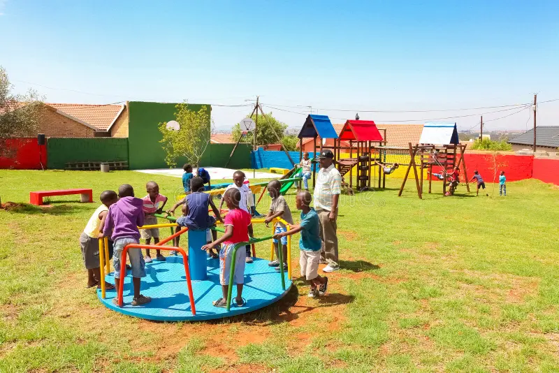

EARLY YEARS
0–3 years
A caring start with room to explore through play, stories, movement and everyday discovery.
Ask about this age groupOur programs
Little learners discover so much through stories, creativity, movement and the everyday world around them.

Learning through playLearning, the little-learner way
Explore activities for young learners. Contact the centre to confirm group placement, daily routines and availability.
EARLY YEARS
A caring start with room to explore through play, stories, movement and everyday discovery.
Ask about this age groupPRESCHOOL YEARS
Encouraging experiences that help children build confidence, creativity and connections as they learn.
Ask about this age groupPicture books, songs and conversations give little learners a playful way to share ideas and enjoy words.
Colours, textures and open-ended making give children space to explore, create and express themselves.
Active play and imaginative games offer fun opportunities to move, collaborate and try new things.
Everyday group moments can help children practise kindness, independence and being part of a community.
Looking for something specific?
Ask about age-group placement, current timetable and availability.